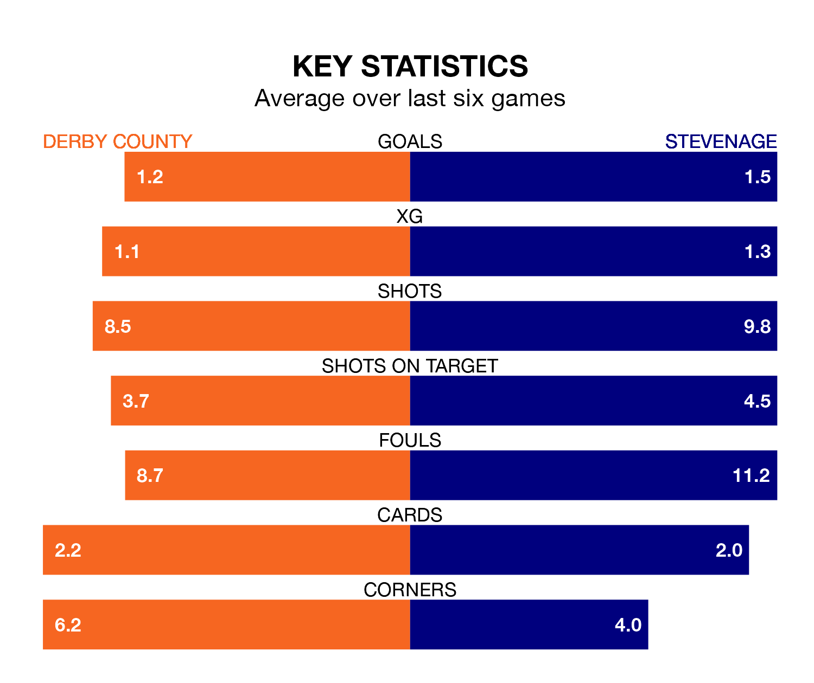

Stevenage travel to Derby County on Saturday in EFL League One.
The visitors come into the game on the back of a defeat in their last match, having lost to Bristol Rovers 3-2 at home, with goals from Jake Forster-Caskey and Kane Hemmings.
The Rams, meanwhile, won their last match, 3-0 against Exeter City, with their goals scored by Tom Barkhuizen, Nathaniel Mendez-Laing and Max Bird.
With 57 goals in 32 games so far this season, Derby are the league's second-highest scorers with 1.8 goals per game. And they are conceding fewer than average, letting in 29 goals at a rate of 0.9 per game.
Stevenage are also above average scorers, with 1.5 goals per game, compared to a league average of 1.3. They have conceded 1.1 goals per game.
County are second in the table after 32 games, of which they have won 19 and drawn six, earning 63 points.
The Boro are five places behind the Rams in seventh, with 15 wins and eight draws putting them on 53 points.
In Jamie Reid, the visitors have the league's most on-form striker so far this season. He has notched 17 goals in 30 appearances.
His goal rate of one every 142 minutes is quicker than that of James Collins, the home side's top scorer with a goal every 173 minutes, and a total of 13 goals in 32 games.
Derby are in reasonable form in EFL League One, with three wins and two draws from their last six games.
With three wins and a draw over that period, Stevenage's form is slightly worse – they have taken 10 points from 18, compared to Derby's 11.
Over the last two years, Derby and Stevenage have played each other twice. Stevenage won both of them.
Their last meeting was on October 28, when Stevenage won 3-1 at home.
Updated: 12:06 (UTC), 15/02/24